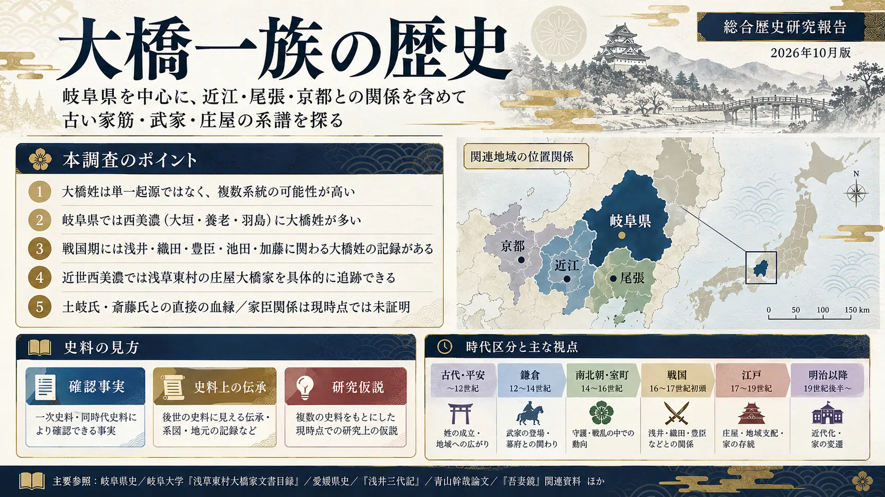
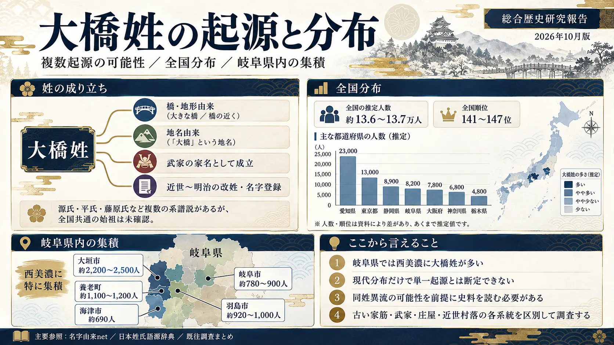
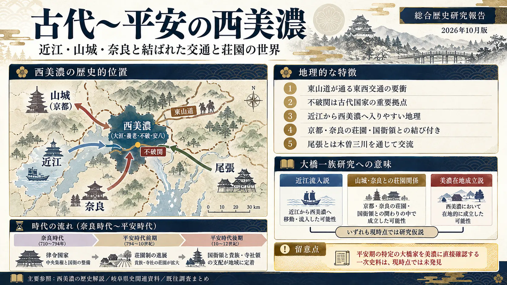
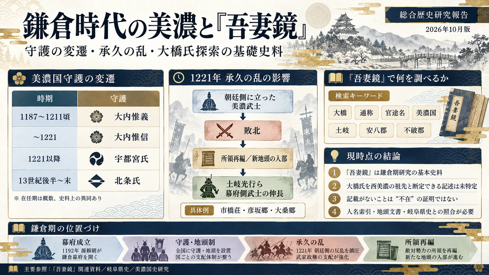
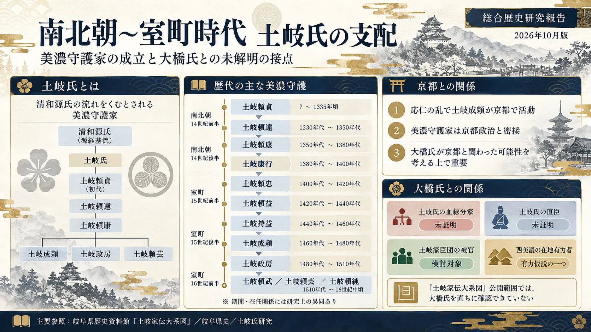
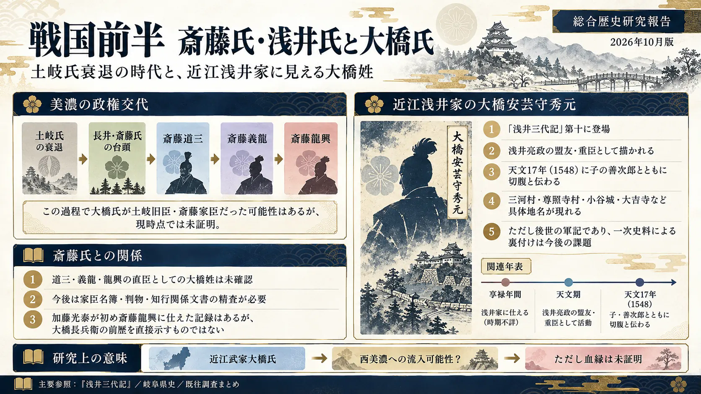
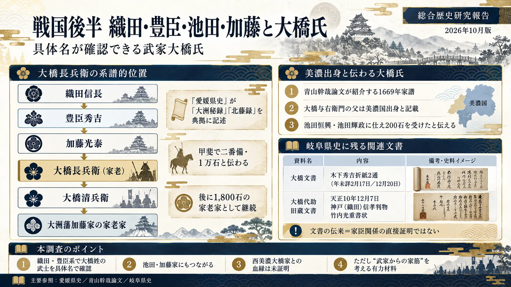
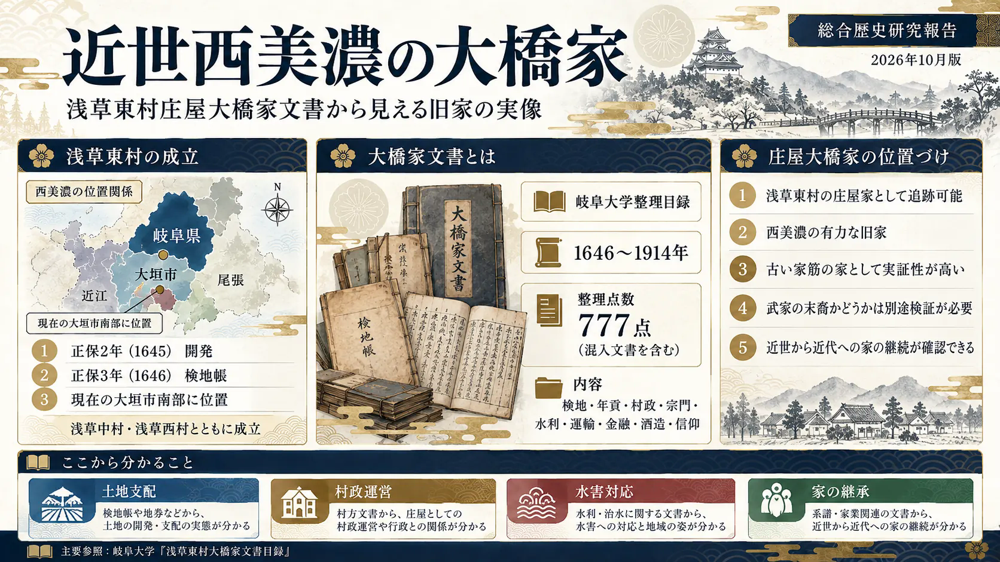
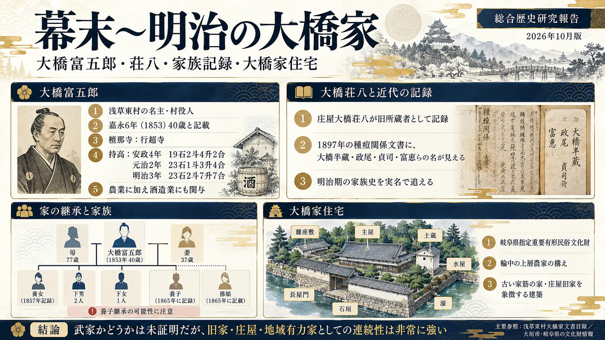
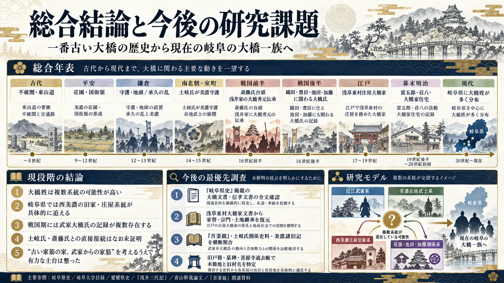

研究の核心
大橋姓は全国共通の単一祖先を確認できていない。近江浅井氏の軍記、大洲藩加藤家の家臣史、尾張津島の家譜、西美濃の庄屋家文書は、それぞれ重要な別個の証拠群である。
現在の岐阜の大橋家と、それぞれの中世武家をつなぐ連続した親子・相続の証明は未達である。
古い家筋、武家からの家筋。
平安・鎌倉・土岐氏の美濃から、近江浅井氏、織田・豊臣、そして岐阜の庄屋大橋家へ。
2026年10月版 | 対象家の伝承：岐阜県出身（旧村名は不明）
「岐阜出身」という伝承から、武家・旧家の流れを歴史資料で追う。
大橋姓は全国共通の単一祖先を確認できていない。近江浅井氏の軍記、大洲藩加藤家の家臣史、尾張津島の家譜、西美濃の庄屋家文書は、それぞれ重要な別個の証拠群である。
現在の岐阜の大橋家と、それぞれの中世武家をつなぐ連続した親子・相続の証明は未達である。

木下秀吉の「大橋文書」、加藤家の大橋長兵衛、浅草東村大橋家文書、岐阜県指定大橋家住宅。
浅井家臣大橋秀元の切腹、津島大橋家の古い系図や池田家への提出家譜。
近江流入、土岐氏・斎藤氏の旧臣、西美濃庄屋家との血縁的接続。
同姓異流の視点が、家筋の誤認を防ぐ。

「大橋」は橋の近傍・同名地名・武家の家名・改姓など複数の形成経路が想定される。清和源氏・桓武平氏・藤原氏等の系譜説を一つに統合することはできない。現在の姓の密度は中世の発祥地や血統の直接証拠ではない。
| 地域 | 大橋姓人数の目安 | 歴史的な着眼点 |
|---|---|---|
| 大垣市 | 約2,200〜2,500 | 西美濃・庄屋文書との接点 |
| 養老町 | 約1,100〜1,200 | 西美濃の村落・水利史 |
| 羽島市 | 約920〜1,000 | 木曽三川・尾張との交通 |
| 岐阜市 | 約780〜900 | 守護・斎藤氏・織田氏史 |
| 海津市 | 約690 | 木曽三川・近世村落 |
人数は過去の民間推計値を幅で掲載。厳密な統計人口・国勢調査の結果ではありません。図中グラフの数値・地図配置も推計図解です。
近江からの交通、山城・大和からの領主関係、尾張からの経済交流。

不破・関ヶ原を通る東山道の経路は、古代以来、人や情報が行き交う条件を備えていた。近江から武士が移住した可能性の検討には適しているが、「大橋家の移住」という直接証拠ではない。
朝廷・院・貴族・東大寺などの荘園・国衙領経営を通じて、京都や奈良と西美濃は結びついた。在地の荘官・名主が領主と交流した可能性もある。
木曽三川と交易路は尾張津島と美濃をつなぐ。ただし河道や輸送経路は時代とともに変化し、江戸期の交通網を平安期へ直接投影しない。
地図は概念図です。原寸の正確な国境・縮尺を示さず、矢印は確認された大橋氏の移住経路ではありません。
美濃の地頭・所領が再編された1221年は、家の成立を探る重要な分岐点。

| 時期の概略 | 主な守護 | 注記 |
|---|---|---|
| 12世紀末 | 大内惟義 | 初期鎌倉幕府の守護 |
| 〜1221 | 大内惟信 | 承久の乱で朝廷側に立ったと伝わる |
| 1221以降 | 宇都宮氏 | 守護体制の再編 |
| 13世紀後半〜末 | 北条氏 | 得宗・北条一門の影響 |
1180〜1266年の編年史。「大橋」が出ない＝大橋家が存在しなかった、ではない。検索対象を「大橋／大橋太郎／大橋入道／官途名／美濃国／土岐／安八／不破」へ広げ、同時代の下文・譲状・所領安堵文書と突き合わせる。
今回の検証では、特定の大橋武士を現代岐阜の祖先に結び付けられる日付付き条文は未確認。本文全巻の異名照合を完了したという意味でもない。資料：国文学研究資料館の本文データ ↗。
土岐氏の政治支配下にいたことと、土岐氏の血縁分家であることは別。

| 時代 | 関係人物 | 注記 |
|---|---|---|
| 14世紀前半 | 土岐頼貞・頼遠 | 足利政権の成立期 |
| 14世紀後半 | 土岐頼康・康行 | 守護勢力の拡張・内紛 |
| 14世紀末〜15世紀 | 頼忠・頼益・持益 | 幕府と守護家の継承 |
| 15世紀後半 | 土岐成頼 | 応仁の乱で京都にも関与 |
| 15世紀末〜16世紀 | 土岐政房・頼武・頼芸・頼純 | 斎藤氏の台頭と守護家衰退 |
『土岐家伝大系図』は江戸期に成立した系図で、公開範囲に大橋氏の直接的な血縁記載は確認されていない。したがって「土岐氏の分家」「土岐氏の直臣」の双方は未証明。土岐家の被官、在地国人、独立した庄屋系統も比較する必要がある。公開翻刻・原本画像 ↗
近江浅井氏、織田・豊臣政権、池田・加藤家との関係を個別に追う。


『浅井三代記』第十「大橋安芸守秀元切腹事」に登場。浅井亮政の盟友、久政を諫めた人物として描かれ、1548年に子の善次郎と切腹したと記載される。三河村・尊照寺村・小谷城・大吉寺といった場所も現れる。
後世軍記の記述 年代・事跡には別の同時代史料による照合が必要。原文 ↗
『愛媛県史』は『大洲秘録』『北藤録』により、長兵衛が織田信長→豊臣秀吉に仕え、加藤光泰の与力衆の頭として家老となったと記述。甲斐で二番備・1万石、子の清兵衛は朝鮮出兵で負傷、子孫は1,800石の家老家と記される。
県史に記載 長兵衛の出生地や現在の岐阜大橋家との血縁は未確認。県史本文 ↗
青山幹哉の研究が紹介する1669年の家譜に、大橋与右衛門の父が美濃出身で池田恒興・輝政に仕え、200石を受けたとの記述がある。これは「美濃出身」と明記された重要な家伝。ただし家譜は後世の記録で、出身旧村名は未確定。学術論文 ↗
土岐氏の血縁分家、斎藤道三・義龍・龍興の直臣としての大橋氏は、現在確認できる史料からは断定できない。加藤光泰自身が斎藤龍興に仕えたとしても、その部下となった大橋長兵衛も斎藤旧臣だったとはいえない。加藤光泰の経歴 ↗
| 文書群 | 内容 | 所在 | 慎重にみる点 |
|---|---|---|---|
| 大橋文書 | 木下秀吉折紙、年未詳2月17日・12月20日 | 岐阜県史 古代・中世4、p.8 | 文書群の由来・宛所・受取人は未精査 |
| 大橋代助旧蔵文書 | 天正10年12月7日 神戸（織田）信孝判物・竹内光重書状 | 岐阜県史 古代・中世1 | 「後世所蔵」と「家臣関係」は別 |
前者は県史目次の「東京都」区分に収録される。大橋姓の武士宛てだったか、旧所蔵者が何者だったかは、原文・解題を読むまで未確定である。史料編4の目次 ↗／史料編1の目次 ↗
武家系の推測よりも、史料を連続して追える点で重要。

浅草東村は江戸前期に浅草中村・浅草西村とともに成立し、同村で庄屋を務めた大橋家の文書には検地・貢租・村政・戸口・治水・交通・金融・酒造・寺社等が残る。資料年代は1646〜1914年に及ぶ。ただし、この村の開発年以前から大橋家がここにいたとはまだ証明できない。 原目録 ↗
実名の記録から家族史へ、文化財から地域的役割へ。

| 時期 | 史料に基づく記述 | 留意点 |
|---|---|---|
| 1853年（嘉永6） | 大橋富五郎、40歳の記録。母77歳、妻37歳と記載 | 生年・年齢の表記異同を要照合 |
| 1857年（安政4） | 富五郎の持高19石2斗4升2合、宗門関係の家族記録 | 養女・使用人を含む |
| 1865年（元治2の表記を含む） | 持高23石1斗3升4合、養子・孫娘の記載 | 旧暦年号と文書年次に注意 |
| 1870年（明治3） | 持高23石2斗7升7合、農業と酒造業 | 商業活動の史料あり |
| 1897年（明治30） | 種痘関係の大橋半蔵、政尾、貞司、富恵など | 全員の続柄は確定ではない |
クリックすると拡大表示。左右キーでも移動できます。

10｜総合結論と調査ロードマップ生成画像は学術的な原史料・現地写真ではありません。時代区分・人名・数字に誤描写が入り得るため、必ず本文とリンク先の史料を基準としてください。
歴史に現れる大橋姓を、岐阜の大橋家へ無条件につなげない。
初代大橋宗桂（1555〜1634年）は江戸将棋家元の草創期に位置付けられる人物。1612年の扶持支給が知られ、以後大橋本家・分家・伊藤家が将棋史に名を残した。これらと岐阜の武家・庄屋大橋家との系譜接続は未証明である。
『肥後古記集覧』に「大橋家伝并系図」が収録される。『姓氏家系大辞典』第1巻1280〜1281頁と『寛政重修諸家譜』第16の大橋家系譜も調査候補。所在は国立国会図書館レファレンス記録 ↗で確認できるが、岐阜大橋家との血縁は未確認。
| 人物 | 分野・時代 | 備考 |
|---|---|---|
| 大橋訥庵 | 幕末思想 | 大橋家へ養子入りした儒学者 |
| 大橋佐平 | 明治出版 | 博文館創業者 |
| 大橋巨泉 | 放送文化 | 司会・執筆 |
| 大橋純子 | 音楽 | 歌手 |
| 大橋悠依 | スポーツ | 競泳五輪金メダリスト |
| 大橋未歩 | 放送 | アナウンサー |
| 大橋和也 | 芸能 | 音楽・演技 |
| 大橋トリオ | 音楽 | 音楽活動上の名義 |
同姓であることは血統の証明ではありません。
各地点からGoogleマップを開く。歴史的な移住経路を確定する地図ではありません。
建物の現所有者や地域住民への無断訪問は避け、公的窓口や公開資料から調査してください。
歴史の潮流は描ける。しかし、一本の血統としての証明には、まだ接続史料が必要。
戦国期の「武家大橋氏」と、近世西美濃の「庄屋大橋家」は、それぞれ具体的な資料で存在を追える。しかし、その二者と、現在の岐阜出身と伝わる特定の大橋家を一本の直系系図に結ぶ証拠は未確認。土岐氏・斎藤氏の分家・家臣説も未証明である。
『岐阜県史』p.8の折紙、信孝判物の宛所・署判・所領を確認する。
1646年検地帳、宗門・家督・村役人史料から最初期の大橋姓を探す。
『吾妻鏡』・土岐関係史料・『浅井三代記』・池田家家譜・加藤家譜を時系列で比較。
本人と直系親族が閲覧できる戸籍・除籍、菩提寺過去帳、墓碑から出生地を特定する。